# load the libraries
library(DESeq2)
library(tidyverse)
library(RColorBrewer)
library(pheatmap)
library(tximport)
library(ggplot2)
library(ggrepel)
library(limma)
library(ashr)
library(ComplexUpset)
library(UpSetR)
library(ComplexHeatmap)
library(DEGreport)Summarizing results from the Wald test
Learning Objectives
- Setup results data for application of visualization techniques
- Describe different data visualization useful for exploring results from a DGE analysis
- Create a volcano plot to evaluate relationship amongst DGE statistics
- Create a heatmap to illustrate expression changes of differentially expressed genes
Visualizing the results
When we are working with large amounts of data it can be useful to display that information graphically to gain more insight. During this lesson, we will get you started with some basic and more advanced plots commonly used when exploring differential gene expression data, however, many of these plots can be helpful in visualizing other types of data as well.
We will be working with three different data objects we have already created in earlier lessons:
- Metadata for our samples (a dataframe):
meta - Normalized expression data for every gene in each of our samples (a matrix):
normalized_counts - Tibble versions of the DESeq2 results we generated in the last lesson:
res_tableOE_tbandres_tableKD_tb
First, let’s create a metadata tibble from the data frame (don’t lose the row names!)
# read in the data
meta <- readRDS("../../out/object/metadata.rds")
dds <- readRDS("../../out/object/dds.rds")
# res_tableOE <- readRDS("../../out/object/res_tableOE_shrAlt.rds")
res_tableOE <- readRDS("../../out/object/res_tableOE.rds")
res_tableOE_tb <- res_tableOE %>%
data.frame() %>%
rownames_to_column(var="gene") %>%
as_tibble()
res_tableKO <- readRDS("../../out/object/res_tableKO.rds")
res_tableKO_tb <- res_tableKO %>%
data.frame() %>%
rownames_to_column(var="gene") %>%
as_tibble()
tx2gene <- read.delim("../../data/tx2gene_grch38_ens94.txt")
### Set thresholds
padj.cutoff <- 0.05
sigOE <- res_tableOE_tb %>%
dplyr::filter(padj < padj.cutoff)# add the rwnames as variable to the table
mov10_meta <- meta %>%
rownames_to_column(var="samplename") %>%
as_tibble()
mov10_meta# A tibble: 8 × 2
samplename sampletype
<chr> <fct>
1 Irrel_kd_1 control
2 Irrel_kd_2 control
3 Irrel_kd_3 control
4 Mov10_kd_2 MOV10_knockdown
5 Mov10_kd_3 MOV10_knockdown
6 Mov10_oe_1 MOV10_overexpression
7 Mov10_oe_2 MOV10_overexpression
8 Mov10_oe_3 MOV10_overexpressionNext, let’s bring in a column with gene symbols to the normalized_counts object, so we can use them to label our plots. Ensembl IDs are great for many things, but the gene symbols are much more recognizable to us, as biologists.
# DESeq2 creates a matrix when you use the counts() function
## First convert normalized_counts to a data frame and transfer the row names to a new column called "gene"
normalized_counts <- counts(dds, normalized=T) %>%
data.frame() %>%
rownames_to_column(var="gene")
head(normalized_counts) gene Irrel_kd_1 Irrel_kd_2 Irrel_kd_3 Mov10_kd_2 Mov10_kd_3
1 ENSG00000000003 3924.5330149 3794.358909 3960.73864 3951.611614 3940.55759
2 ENSG00000000005 24.2144404 30.188315 30.69306 23.666175 13.89025
3 ENSG00000000419 1325.5164068 1340.777579 1179.68091 1515.274832 1431.76442
4 ENSG00000000457 455.5902129 421.595434 476.40960 597.411015 610.10260
5 ENSG00000000460 1250.1825920 1211.696508 1134.30857 1389.268441 1300.34126
6 ENSG00000000938 0.8968311 1.040976 0.00000 1.279253 0.00000
Mov10_oe_1 Mov10_oe_2 Mov10_oe_3
1 2727.25444 2729.93541 3178.07820
2 20.39526 33.31328 33.63046
3 1541.88181 1548.19073 1942.92323
4 527.01357 518.10913 541.14463
5 965.10380 998.52166 1028.78626
6 0.00000 0.00000 0.00000# Next, merge together (ensembl IDs) the normalized counts data frame with a subset of the annotations in the tx2gene data frame (only the columns for ensembl gene IDs and gene symbols)
grch38annot <- tx2gene %>%
dplyr::select(ensgene, symbol) %>%
dplyr::distinct()
head(grch38annot) ensgene symbol
1 ENSG00000210049 MT-TF
2 ENSG00000211459 MT-RNR1
3 ENSG00000210077 MT-TV
4 ENSG00000210082 MT-RNR2
5 ENSG00000276345 AC004556.1
6 ENSG00000209082 MT-TL1## This will bring in a column of gene symbols
# normalized_counts <- merge(normalized_counts, grch38annot, by.x="gene", by.y="ensgene")
# normalized_counts <- normalized_counts %>%
# as_tibble()
# create a tibble for the normalized counts
normalized_counts <- normalized_counts %>%
left_join(grch38annot,by = c("gene" = "ensgene")) %>%
as_tibble()
head(normalized_counts)# A tibble: 6 × 10
gene Irrel_kd_1 Irrel_kd_2 Irrel_kd_3 Mov10_kd_2 Mov10_kd_3 Mov10_oe_1
<chr> <dbl> <dbl> <dbl> <dbl> <dbl> <dbl>
1 ENSG0000000… 3925. 3794. 3961. 3952. 3941. 2727.
2 ENSG0000000… 24.2 30.2 30.7 23.7 13.9 20.4
3 ENSG0000000… 1326. 1341. 1180. 1515. 1432. 1542.
4 ENSG0000000… 456. 422. 476. 597. 610. 527.
5 ENSG0000000… 1250. 1212. 1134. 1389. 1300. 965.
6 ENSG0000000… 0.897 1.04 0 1.28 0 0
# ℹ 3 more variables: Mov10_oe_2 <dbl>, Mov10_oe_3 <dbl>, symbol <chr>NOTE: A possible alternative to the above:
normalized_counts <- counts(dds, normalized=T) %>% data.frame() %>% rownames_to_column(var="gene") %>% as_tibble() %>% left_join(grch38annot, by=c("gene" = "ensgene"))
Plotting signicant DE genes
One way to visualize results would be to simply plot the expression data for a handful of genes. We could do that by picking out specific genes of interest or selecting a range of genes.
Using DESeq2 plotCounts() to plot expression of a single gene
To pick out a specific gene of interest to plot, for example MOV10, we can use the plotCounts() from DESeq2. plotCounts() requires that the gene specified matches the original input to DESeq2, which in our case was Ensembl IDs.
# Find the Ensembl ID of MOV10
grch38annot[grch38annot$symbol == "MOV10", "ensgene"][1] "ENSG00000155363"# Plot expression for single gene
plotCounts(dds, gene="ENSG00000155363", intgroup="sampletype") 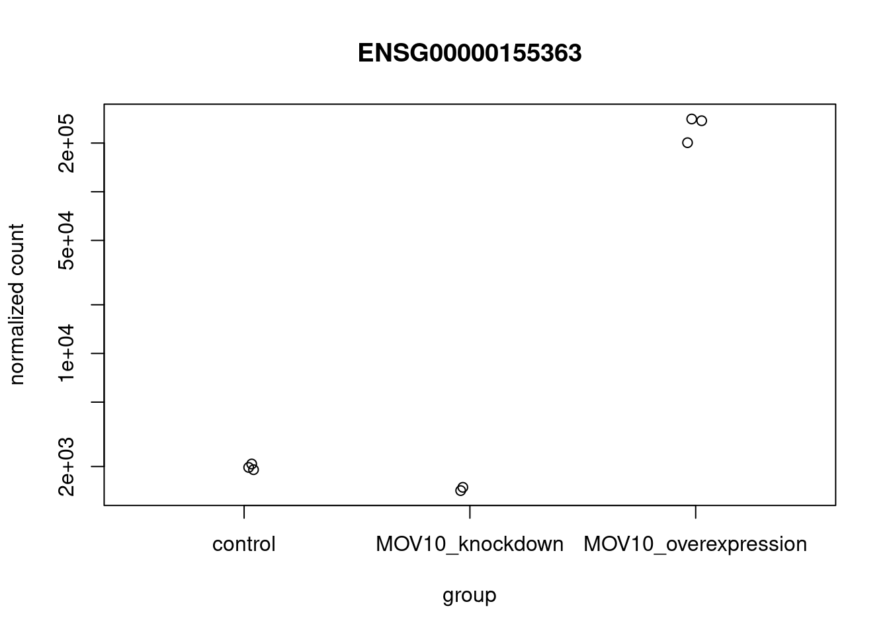
Here is an alternative approach using the data extracted from the dds object. Notice that with this approach we can plot any number of genes.
# extract the lut from the object
lut <- colData(dds) %>%
as.data.frame() %>%
rownames_to_column("sample")
# define the GOIs
GOI <- c("ENSG00000155363")
# define the MR per sample
MR <- counts(dds,normalized=T) %>%
as.data.frame() %>%
rownames_to_column("symbol") %>%
pivot_longer(names_to = "sample",values_to = "exp",-symbol)%>%
group_by(sample)%>%
summarise(MR = sum(exp)/10^6)
# plot the data following the methods implemented in the plotCounts funciton from DESeq2
# Normalized counts plus a pseudocount of 0.5 are shown by default.
df_counts <- counts(dds,normalized=T) %>%
as.data.frame() %>%
rownames_to_column("symbol") %>%
filter(symbol %in% GOI) %>%
pivot_longer(names_to = "sample",values_to = "count",-symbol) %>%
# add the milion reads per sample
left_join(MR,by = "sample") %>%
left_join(lut,by = "sample") %>%
# this is the adjustment of the reads
mutate(count_norm_adj = count + 0.5)
# plot the data adjusted norm counts or norm counts
df_counts %>%
ggplot(aes(x=sampletype,y = count_norm_adj))+
# ggplot(aes(x=sampletype,y = count))+
geom_boxplot(outlier.shape = NA)+
geom_point(position = position_jitter(width = 0.1),alpha=0.6)+facet_wrap(~symbol,scales = "free") +
scale_y_continuous(trans = "log1p",breaks = c(2000,20000,200000)) +
theme_bw()+
theme(strip.background = element_blank(),
panel.border = element_rect(colour = "black", fill = NA))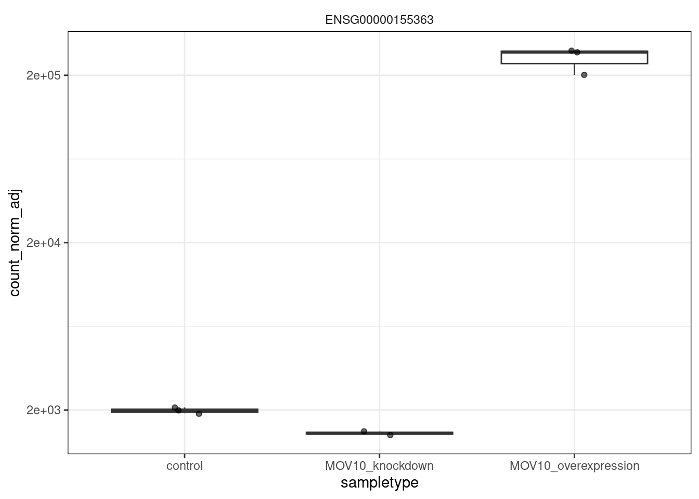
This DESeq2 function only allows for plotting the counts of a single gene at a time, and is not flexible regarding the appearance.
Using ggplot2 to plot expression of a single gene
If you wish to change the appearance of this plot, we can save the output of plotCounts() to a variable specifying the returnData=TRUE argument, then use ggplot():
# Save plotcounts to a data frame object
d <- plotCounts(dds, gene="ENSG00000155363", intgroup="sampletype", returnData=TRUE)
# What is the data output of plotCounts()?
d count sampletype
Irrel_kd_1 1911.647 control
Irrel_kd_2 1974.191 control
Irrel_kd_3 2072.948 control
Mov10_kd_2 1419.191 MOV10_knockdown
Mov10_kd_3 1486.757 MOV10_knockdown
Mov10_oe_1 274747.523 MOV10_overexpression
Mov10_oe_2 281594.127 MOV10_overexpression
Mov10_oe_3 200974.583 MOV10_overexpression# compare it with the value exprected from the manual extraction
df_counts# A tibble: 8 × 7
symbol sample count MR sampletype sizeFactor count_norm_adj
<chr> <chr> <dbl> <dbl> <fct> <dbl> <dbl>
1 ENSG00000155363 Irrel_kd_1 1911. 27.9 control 1.12 1912.
2 ENSG00000155363 Irrel_kd_2 1974. 27.6 control 0.961 1974.
3 ENSG00000155363 Irrel_kd_3 2072. 27.4 control 0.749 2073.
4 ENSG00000155363 Mov10_kd_2 1419. 29.0 MOV10_knoc… 1.56 1419.
5 ENSG00000155363 Mov10_kd_3 1486. 28.6 MOV10_knoc… 0.936 1487.
6 ENSG00000155363 Mov10_oe_1 274747. 26.2 MOV10_over… 1.23 274748.
7 ENSG00000155363 Mov10_oe_2 281594. 26.3 MOV10_over… 1.14 281594.
8 ENSG00000155363 Mov10_oe_3 200974. 26.4 MOV10_over… 0.654 200975.# Plot the MOV10 normalized counts, using the samplenames (rownames(d) as labels)
ggplot(d, aes(x = sampletype, y = count, color = sampletype)) +
geom_point(position=position_jitter(w = 0.1,h = 0)) +
geom_text_repel(aes(label = rownames(d))) +
theme_bw() +
ggtitle("MOV10") +
theme(plot.title = element_text(hjust = 0.5))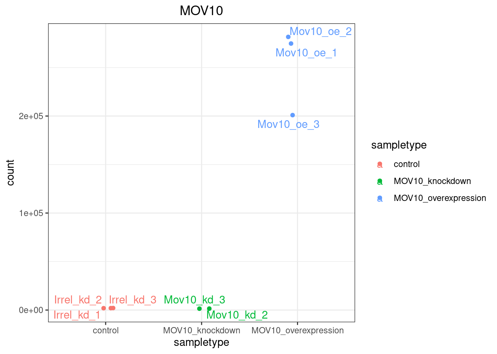
Note that in the plot below (code above), we are using
geom_text_repel()from theggrepelpackage to label our individual points on the plot.
If you are interested in plotting the expression of multiple genes all together, please refer to the short lesson linked here where we demo this for the top 20 most significantly expressed genes.
Using ggplot2 to plot multiple genes (e.g. top 20)
Often it is helpful to check the expression of multiple genes of interest at the same time. This often first requires some data wrangling. We are going to plot the normalized count values for the top 20 differentially expressed genes (by padj values). To do this, we first need to determine the gene names of our top 20 genes by ordering our results and extracting the top 20 genes (by padj values):
## Order results by padj values
top20_sigOE_genes <- res_tableOE_tb %>%
arrange(padj) %>% #Arrange rows by padj values
slice(1:20) %>% # Extract the first 20 genes
pull(gene) #Extract character vector of ordered genes
top20_sigOE_genes [1] "ENSG00000155363" "ENSG00000189060" "ENSG00000173110" "ENSG00000265972"
[5] "ENSG00000187837" "ENSG00000270882" "ENSG00000155090" "ENSG00000245532"
[9] "ENSG00000102317" "ENSG00000124762" "ENSG00000126368" "ENSG00000143321"
[13] "ENSG00000096654" "ENSG00000204389" "ENSG00000186480" "ENSG00000112972"
[17] "ENSG00000089220" "ENSG00000104885" "ENSG00000204388" "ENSG00000184887"Then, we can extract the normalized count values for these top 20 genes:
## normalized counts for top 20 significant genes
top20_sigOE_norm <- normalized_counts %>%
filter(gene %in% top20_sigOE_genes)
top20_sigOE_norm# A tibble: 20 × 10
gene Irrel_kd_1 Irrel_kd_2 Irrel_kd_3 Mov10_kd_2 Mov10_kd_3 Mov10_oe_1
<chr> <dbl> <dbl> <dbl> <dbl> <dbl> <dbl>
1 ENSG000000… 7289. 7260. 7541. 6928. 6554. 4692.
2 ENSG000000… 502. 500. 475. 794. 793. 1046.
3 ENSG000001… 8550. 8510. 8122. 9186. 8826. 5096.
4 ENSG000001… 3680. 4299. 4204. 2977. 3018. 2244.
5 ENSG000001… 9310. 9373. 9272. 9626. 10410. 16168.
6 ENSG000001… 1639. 1696. 1732. 4223. 3689. 3249.
7 ENSG000001… 594. 542. 558. 684. 518. 1654.
8 ENSG000001… 15278. 14275. 15282. 14062. 14214. 9757.
9 ENSG000001… 966. 1039. 965. 1980. 1919. 2183.
10 ENSG000001… 1911. 1974. 2072. 1419. 1486. 274747.
11 ENSG000001… 7.17 5.20 8.01 7.04 9.62 659.
12 ENSG000001… 1613. 1693. 1631. 1515. 1539. 852.
13 ENSG000001… 7918. 7953. 8489. 8426. 10157. 16434.
14 ENSG000001… 950. 931. 949. 1746. 1445. 2638.
15 ENSG000001… 4492. 4507. 4942. 5591. 5346. 13799.
16 ENSG000002… 73876. 67619. 64377. 85915. 82554. 113004.
17 ENSG000002… 84332. 78483. 76299. 98960. 92565. 133166.
18 ENSG000002… 14970. 14956. 15680. 20132. 21079. 27295.
19 ENSG000002… 2812. 2944. 3039. 5788. 4906. 7475.
20 ENSG000002… 1126. 1186. 1240. 4019. 3291. 3304.
# ℹ 3 more variables: Mov10_oe_2 <dbl>, Mov10_oe_3 <dbl>, symbol <chr>Now that we have the normalized counts for each of the top 20 genes for all 8 samples, to plot using ggplot(), we need to gather the counts for all samples into a single column to allow us to give ggplot the one column with the values we want it to plot. The gather() function in the tidyr package will perform this operation and will output the normalized counts for all genes for Mov10_oe_1 listed in the first 20 rows, followed by the normalized counts for Mov10_oe_2 in the next 20 rows, so on and so forth.

# Gathering the columns to have normalized counts to a single column
gathered_top20_sigOE <- top20_sigOE_norm %>%
gather(colnames(top20_sigOE_norm)[2:9], key = "samplename", value = "normalized_counts")
## check the column header in the "gathered" data frame
head(gathered_top20_sigOE)# A tibble: 6 × 4
gene symbol samplename normalized_counts
<chr> <chr> <chr> <dbl>
1 ENSG00000089220 PEBP1 Irrel_kd_1 7289.
2 ENSG00000096654 ZNF184 Irrel_kd_1 502.
3 ENSG00000102317 RBM3 Irrel_kd_1 8550.
4 ENSG00000104885 DOT1L Irrel_kd_1 3680.
5 ENSG00000112972 HMGCS1 Irrel_kd_1 9310.
6 ENSG00000124762 CDKN1A Irrel_kd_1 1639.# as alternative I can also use the pivot_longer function
gathered_top20_sigOE_alt <- top20_sigOE_norm %>%
pivot_longer(names_to = "samplename",values_to = "normalized_counts",-c(gene,symbol))
head(gathered_top20_sigOE_alt)# A tibble: 6 × 4
gene symbol samplename normalized_counts
<chr> <chr> <chr> <dbl>
1 ENSG00000089220 PEBP1 Irrel_kd_1 7289.
2 ENSG00000089220 PEBP1 Irrel_kd_2 7260.
3 ENSG00000089220 PEBP1 Irrel_kd_3 7541.
4 ENSG00000089220 PEBP1 Mov10_kd_2 6928.
5 ENSG00000089220 PEBP1 Mov10_kd_3 6554.
6 ENSG00000089220 PEBP1 Mov10_oe_1 4692.Now, if we want our counts colored by sample group, then we need to combine the metadata information with the melted normalized counts data into the same data frame for input to ggplot():
gathered_top20_sigOE <- inner_join(mov10_meta, gathered_top20_sigOE)Joining with `by = join_by(samplename)`gathered_top20_sigOE# A tibble: 160 × 5
samplename sampletype gene symbol normalized_counts
<chr> <fct> <chr> <chr> <dbl>
1 Irrel_kd_1 control ENSG00000089220 PEBP1 7289.
2 Irrel_kd_1 control ENSG00000096654 ZNF184 502.
3 Irrel_kd_1 control ENSG00000102317 RBM3 8550.
4 Irrel_kd_1 control ENSG00000104885 DOT1L 3680.
5 Irrel_kd_1 control ENSG00000112972 HMGCS1 9310.
6 Irrel_kd_1 control ENSG00000124762 CDKN1A 1639.
7 Irrel_kd_1 control ENSG00000126368 NR1D1 594.
8 Irrel_kd_1 control ENSG00000143321 HDGF 15278.
9 Irrel_kd_1 control ENSG00000155090 KLF10 966.
10 Irrel_kd_1 control ENSG00000155363 MOV10 1911.
# ℹ 150 more rowsgathered_top20_sigOE_alt <- inner_join(mov10_meta, gathered_top20_sigOE_alt)Joining with `by = join_by(samplename)`gathered_top20_sigOE_alt# A tibble: 160 × 5
samplename sampletype gene symbol normalized_counts
<chr> <fct> <chr> <chr> <dbl>
1 Irrel_kd_1 control ENSG00000089220 PEBP1 7289.
2 Irrel_kd_1 control ENSG00000096654 ZNF184 502.
3 Irrel_kd_1 control ENSG00000102317 RBM3 8550.
4 Irrel_kd_1 control ENSG00000104885 DOT1L 3680.
5 Irrel_kd_1 control ENSG00000112972 HMGCS1 9310.
6 Irrel_kd_1 control ENSG00000124762 CDKN1A 1639.
7 Irrel_kd_1 control ENSG00000126368 NR1D1 594.
8 Irrel_kd_1 control ENSG00000143321 HDGF 15278.
9 Irrel_kd_1 control ENSG00000155090 KLF10 966.
10 Irrel_kd_1 control ENSG00000155363 MOV10 1911.
# ℹ 150 more rowsThe inner_join() will merge 2 data frames with respect to the “samplename” column, i.e. a column with the same column name in both data frames. Now that we have a data frame in a format that can be utilised by ggplot easily, let’s plot!
## plot using ggplot2
ggplot(gathered_top20_sigOE) +
geom_point(aes(x = symbol, y = normalized_counts, color = sampletype)) +
# scale_y_log10() +
scale_y_continuous(trans = "log10") +
xlab("Genes") +
ylab("log10 Normalized Counts") +
ggtitle("Top 20 Significant DE Genes") +
theme_bw() +
theme(axis.text.x = element_text(angle = 45, hjust = 1)) +
theme(plot.title = element_text(hjust = 0.5))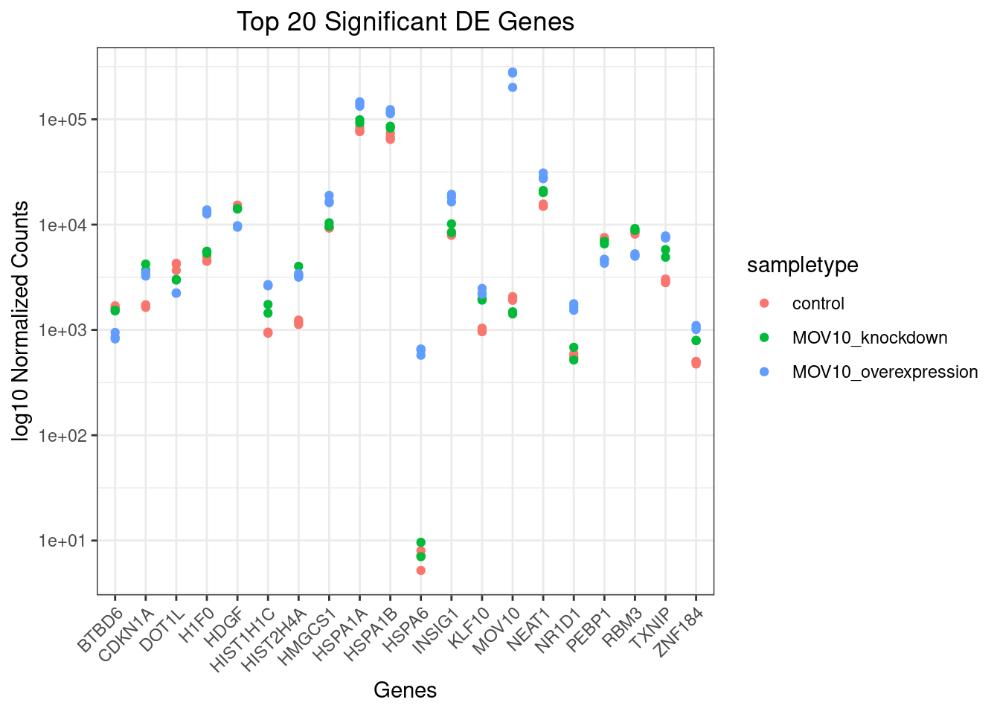
# using the date generate from pivot_longer
ggplot(gathered_top20_sigOE_alt) +
geom_point(aes(x = symbol, y = normalized_counts, color = sampletype)) +
# scale_y_log10() +
scale_y_continuous(trans = "log10") +
xlab("Genes") +
ylab("log10 Normalized Counts") +
ggtitle("Top 20 Significant DE Genes") +
theme_bw() +
theme(axis.text.x = element_text(angle = 45, hjust = 1)) +
theme(plot.title = element_text(hjust = 0.5))Heatmap
In addition to plotting subsets, we could also extract the normalized values of all the significant genes and plot a heatmap of their expression using pheatmap().
### Extract normalized expression for significant genes from the OE and control samples (2:4 and 7:9)
norm_OEsig <- normalized_counts[,c(1:4,7:9)] %>%
dplyr::filter(gene %in% sigOE$gene)
head(norm_OEsig)# A tibble: 6 × 7
gene Irrel_kd_1 Irrel_kd_2 Irrel_kd_3 Mov10_oe_1 Mov10_oe_2 Mov10_oe_3
<chr> <dbl> <dbl> <dbl> <dbl> <dbl> <dbl>
1 ENSG0000000… 3925. 3794. 3961. 2727. 2730. 3178.
2 ENSG0000000… 1326. 1341. 1180. 1542. 1548. 1943.
3 ENSG0000000… 1250. 1212. 1134. 965. 999. 1029.
4 ENSG0000000… 2691. 2538. 2625. 1898. 2117. 2379.
5 ENSG0000000… 2752. 2514. 2601. 2149. 2134. 2096.
6 ENSG0000000… 1027. 891. 1042. 870. 810. 683.Now let’s draw the heatmap using pheatmap:
### Set a color palette
heat_colors <- brewer.pal(6, "YlOrRd")
### Run pheatmap using the metadata data frame for the annotation
pheatmap::pheatmap(norm_OEsig[2:7],
color = heat_colors,
cluster_rows = T,
show_rownames = F,
annotation = meta,
border_color = NA,
fontsize = 10,
scale = "row",
fontsize_row = 10,
height = 20)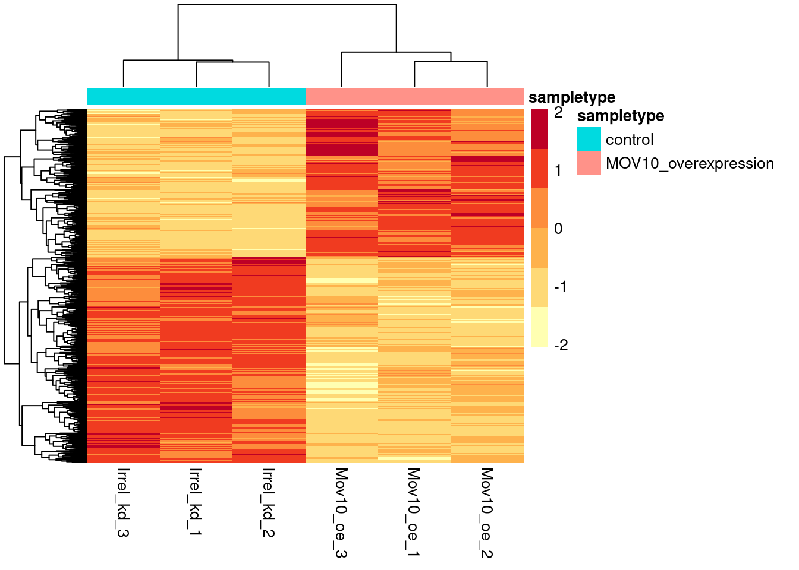
NOTE: There are several additional arguments we have included in the function for aesthetics. One important one is
scale="row", in which Z-scores are plotted, rather than the actual normalized count value.Z-scores are computed on a gene-by-gene basis by subtracting the mean and then dividing by the standard deviation. The Z-scores are computed after the clustering, so that it only affects the graphical aesthetics and the color visualization is improved.
Another useful package I have been using for plotting Heatmaps, is ComplexHeatmaps. Here is a sample snippet that allow
# pull the degs
DEG_2 <- sigOE %>%
pull(gene)
# z-scale the expression matrix.
# I generally use the vst transformed data for this plot, but to replicate the vignette I am using the normalized counts matrix
# as in the vignette, focus only on the control on OE samples
# mat_filter <- assay(vds_filter) %>%
# data.frame() %>%
# as.matrix()
# filter only the samples of interest
mat_filter <- normalized_counts[,c(1:4,7:9)] %>%
column_to_rownames("gene") %>%
as.matrix()
# filter only the genes of interest
mat_shr <- mat_filter[rownames(mat_filter) %in% DEG_2, ]
# z scale the matrix by gene (row)
mat2_shr <- (mat_shr - rowMeans(mat_shr))/rowSds(mat_shr,useNames = TRUE)
# generate the metadata fro the new matrix
meta_sample <- data.frame(colname = colnames(mat2_shr)) %>%
left_join(meta %>%
rownames_to_column(var="sample"),
by=c("colname"="sample"))
# make the column of the matrix more readable
# colnames(mat2_shr) <- meta_sample$Sample.name
# build the column annotation for the matrix
column_ha_shr <- HeatmapAnnotation(treat = meta_sample$sampletype,
col = list(treat = c("control" = "gray",
"MOV10_overexpression" = "black")))
ht2_shr <- Heatmap(mat2_shr, show_column_names = T,
name = "exp",
column_title = "sigOE",
# col = viridis::viridis(option = "turbo",n = 10),
# col = colorRamp2(c(-2, 0, 2), c("yellow", "orange", "red")),
col = heat_colors,
# row_names_gp = gpar(fontsize = 3),
top_annotation = column_ha_shr,
show_row_names = F,
# cluster_rows = F,
# right_annotation = row_ha,
# row_split = rep(c(1,2,3,4),c(2,3,4,7))
)
draw(ht2_shr,heatmap_legend_side = "left",annotation_legend_side = "left") 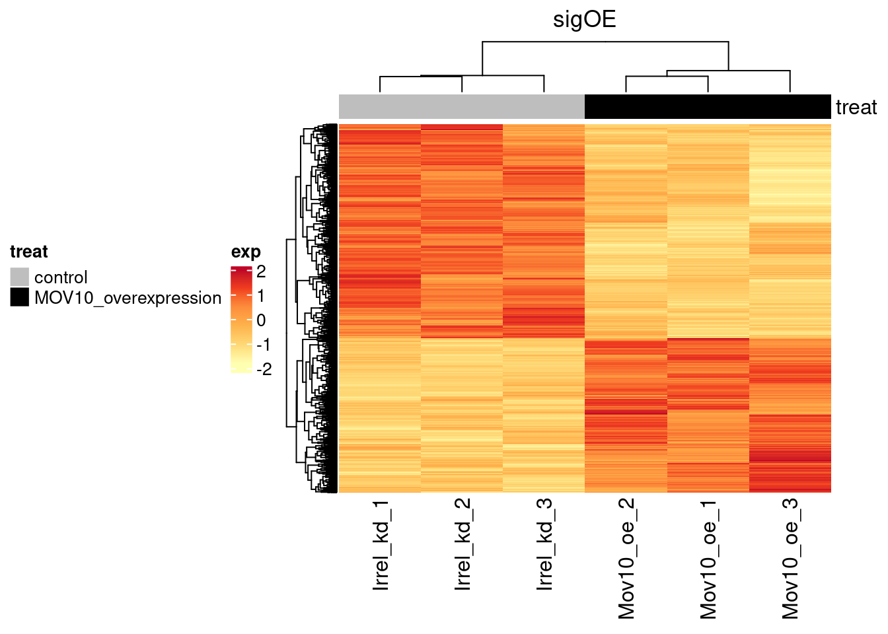
Volcano plot
The above plot would be great to look at the expression levels of a good number of genes, but for more of a global view there are other plots we can draw. A commonly used one is a volcano plot; in which you have the log transformed adjusted p-values plotted on the y-axis and log2 fold change values on the x-axis.
To generate a volcano plot, we first need to have a column in our results data indicating whether or not the gene is considered differentially expressed based on p-adjusted values and we will include a log2fold change here.
## Obtain logical vector where TRUE values denote padj values < 0.05 and fold change > 1.5 in either direction
res_tableOE_tb2 <- res_tableOE_tb %>%
dplyr::mutate(threshold_OE = padj < 0.05 & abs(log2FoldChange) >= 0.58)
head(res_tableOE_tb2)# A tibble: 6 × 8
gene baseMean log2FoldChange lfcSE stat pvalue padj threshold_OE
<chr> <dbl> <dbl> <dbl> <dbl> <dbl> <dbl> <lgl>
1 ENSG0000… 3526. -0.438 0.0775 -5.66 1.53e-8 4.25e-7 FALSE
2 ENSG0000… 26.2 0.0292 0.441 0.0662 9.47e-1 9.73e-1 FALSE
3 ENSG0000… 1478. 0.384 0.114 3.37 7.45e-4 4.67e-3 FALSE
4 ENSG0000… 518. 0.229 0.102 2.24 2.53e-2 8.02e-2 FALSE
5 ENSG0000… 1160. -0.269 0.0815 -3.30 9.59e-4 5.76e-3 FALSE
6 ENSG0000… 0.402 -1.80 4.02 -0.446 6.55e-1 NA NA Now we can start plotting. The geom_point object is most applicable, as this is essentially a scatter plot:
## Volcano plot
ggplot(res_tableOE_tb2) +
geom_point(aes(x = log2FoldChange, y = -log10(padj), colour = threshold_OE)) +
ggtitle("Mov10 overexpression") +
xlab("log2 fold change") +
ylab("-log10 adjusted p-value") +
#scale_y_continuous(limits = c(0,50)) +
theme(legend.position = "none",
plot.title = element_text(size = rel(1.5), hjust = 0.5),
axis.title = element_text(size = rel(1.25))) Warning: Removed 40199 rows containing missing values or values outside the scale range
(`geom_point()`).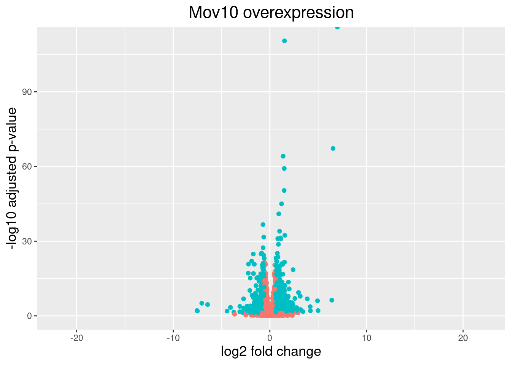
This is a great way to get an overall picture of what is going on, but what if we also wanted to know where the top 10 genes (lowest padj) in our DE list are located on this plot? We could label those dots with the gene name on the Volcano plot using geom_text_repel().
First, we need to order the res_tableOE tibble by padj, and add an additional column to it, to include on those gene names we want to use to label the plot.
## Add all the gene symbols as a column from the grch38 table using left_join
# res_tableOE_tb3 <- bind_cols(, symbol=grch38annot$symbol[match(res_tableOE_tb$gene, grch38annot$ensgene)])
res_tableOE_tb3 <- res_tableOE_tb2 %>%
left_join(grch38annot,by = c("gene" = "ensgene")) %>%
## Create an empty column to indicate which genes to label
dplyr::mutate(genelabels = "") %>%
## Sort by padj values
dplyr::arrange(padj)
## Populate the genelabels column with contents of the gene symbols column for the first 10 rows, i.e. the top 10 most significantly expressed genes
res_tableOE_tb3$genelabels[1:10] <- as.character(res_tableOE_tb3$symbol[1:10])
head(res_tableOE_tb3,n=15)# A tibble: 15 × 10
gene baseMean log2FoldChange lfcSE stat pvalue padj threshold_OE
<chr> <dbl> <dbl> <dbl> <dbl> <dbl> <dbl> <lgl>
1 ENSG00… 95772. 6.99 0.122 57.5 0 0 TRUE
2 ENSG00… 8090. 1.52 0.0665 22.8 3.72e-115 3.27e-111 TRUE
3 ENSG00… 239. 6.54 0.365 17.9 9.44e- 72 5.53e- 68 TRUE
4 ENSG00… 5285. 1.37 0.0786 17.5 1.64e- 68 7.18e- 65 TRUE
5 ENSG00… 1747. 1.49 0.0887 16.8 1.75e- 63 6.15e- 60 TRUE
6 ENSG00… 2595. 1.48 0.0952 15.6 1.49e- 54 4.36e- 51 TRUE
7 ENSG00… 1719. 1.21 0.0821 14.7 3.82e- 49 9.59e- 46 TRUE
8 ENSG00… 21640. 0.920 0.0653 14.1 4.74e- 45 1.04e- 41 TRUE
9 ENSG00… 7322. -0.712 0.0533 -13.4 1.07e- 40 2.08e- 37 TRUE
10 ENSG00… 2894. 1.01 0.0781 12.9 5.93e- 38 1.04e- 34 TRUE
11 ENSG00… 983. 1.55 0.123 12.6 2.71e- 36 4.32e- 33 TRUE
12 ENSG00… 12752. -0.633 0.0509 -12.4 1.57e- 35 2.29e- 32 TRUE
13 ENSG00… 778. 1.09 0.0882 12.4 3.58e- 35 4.83e- 32 TRUE
14 ENSG00… 106441. 0.816 0.0662 12.3 7.23e- 35 9.07e- 32 TRUE
15 ENSG00… 12121. 1.15 0.0934 12.3 9.46e- 35 1.11e- 31 TRUE
# ℹ 2 more variables: symbol <chr>, genelabels <chr>Next, we plot it as before with an additional layer for geom_text_repel() wherein we can specify the column of gene labels we just created.
ggplot(res_tableOE_tb3, aes(x = log2FoldChange, y = -log10(padj))) +
geom_point(aes(colour = threshold_OE)) +
geom_text_repel(aes(label = genelabels)) +
ggtitle("Mov10 overexpression") +
xlab("log2 fold change") +
ylab("-log10 adjusted p-value") +
theme(legend.position = "none",
plot.title = element_text(size = rel(1.5), hjust = 0.5),
axis.title = element_text(size = rel(1.25))) Warning: Removed 40199 rows containing missing values or values outside the scale range
(`geom_point()`).Warning: Removed 40199 rows containing missing values or values outside the scale range
(`geom_text_repel()`).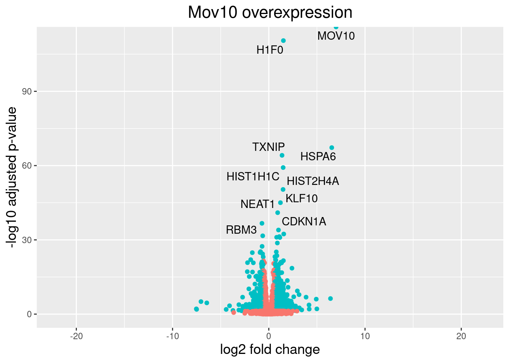
An R package for visualization of DGE results
The Bioconductor package
DEGreportcan use the DESeq2 results output to make the top20 genes and the volcano plots generated above by writing much fewer lines of code. The caveat of these functions is you lose the ability to customize plots as we have demonstrated above.If you are interested, the example code below shows how you can use DEGreport to create similar plots. Note that this is example code, do not run.
DEGreport::degPlot(dds = dds, res = res, n = 20, xs = "type", group = "condition") # dds object is output from DESeq2 DEGreport::degVolcano( data.frame(res[,c("log2FoldChange","padj")]), # table - 2 columns plot_text = data.frame(res[1:10,c("log2FoldChange","padj","id")])) # table to add names # Available in the newer version for R 3.4 DEGreport::degPlotWide(dds = dds, genes = row.names(res)[1:5], group = "condition")
Test the functions with the updated arguments.
# pull the gene ids
GOI <- res_tableOE_tb %>%
arrange(padj) %>%
pull(gene) %>%
.[1:5]
# plot counts split
DEGreport::degPlot(dds, genes = GOI, xs = "sampletype", group = "sampletype") + theme(axis.text.x = element_text(angle = 45,hjust = 1))Using gene as id variables`geom_smooth()` using formula = 'y ~ x'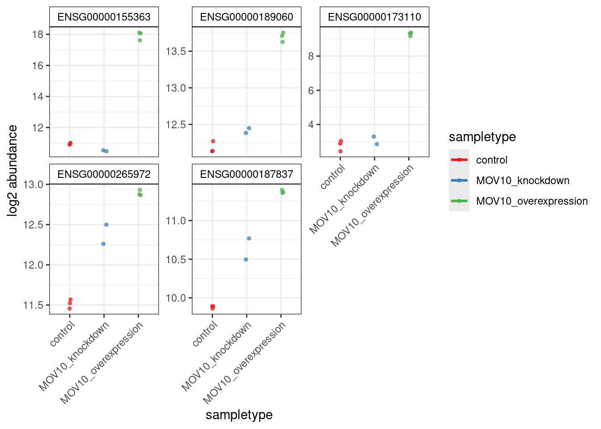
# plot the volcano
DEGreport::degVolcano(res_tableOE_tb3[,c("log2FoldChange","padj")], # table - 2 columns
plot_text = res_tableOE_tb3[1:10,c("log2FoldChange","padj","symbol")]) # table to add namesWarning: ggrepel: 7 unlabeled data points (too many overlaps). Consider
increasing max.overlaps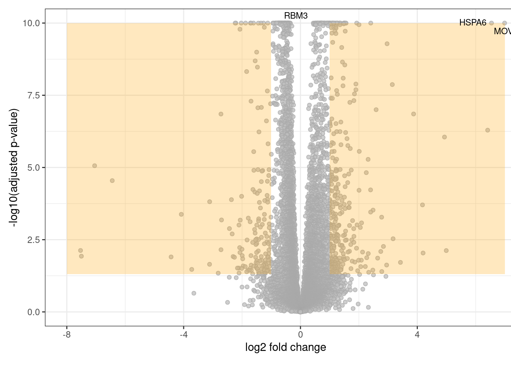
# plot counts
DEGreport::degPlotWide(counts = dds, genes = GOI, group = "sampletype")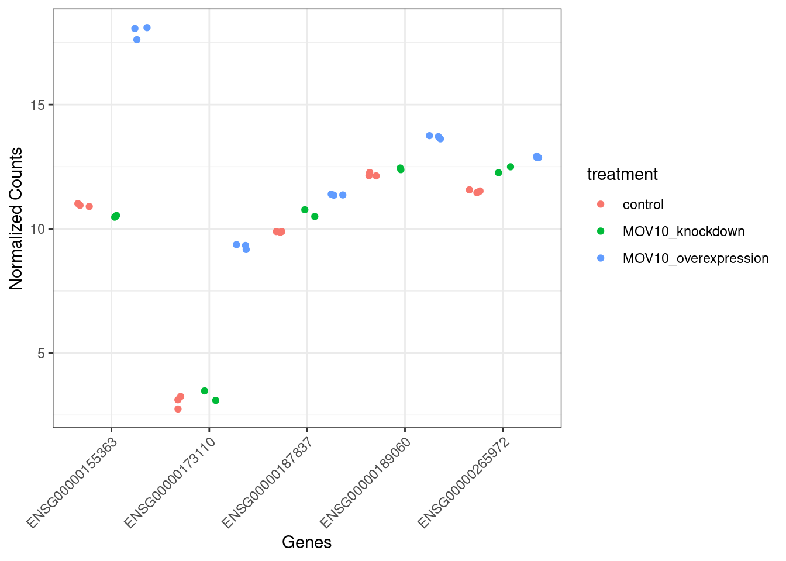